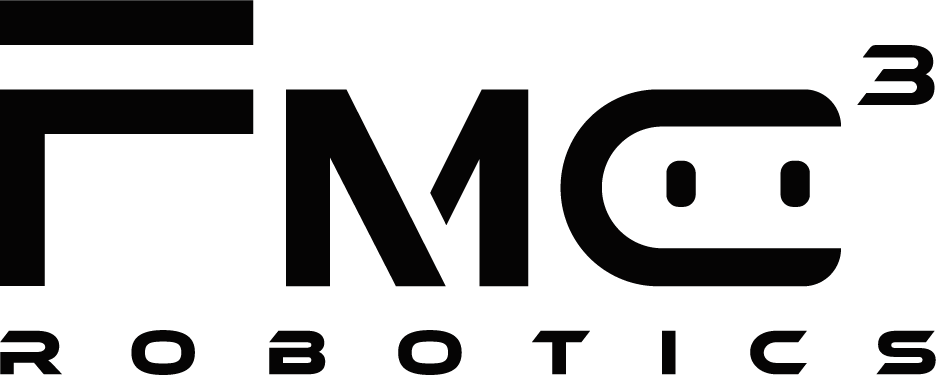
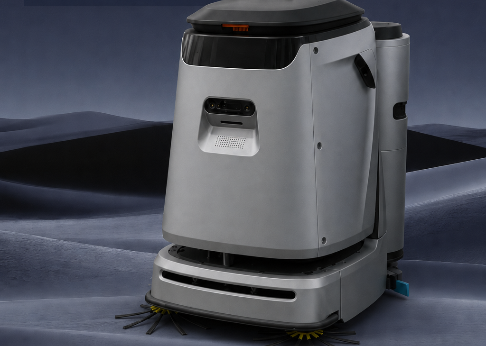

Einladung · FMC3 Robotics
Einladung zur Demonstration des C5-Reinigungsroboters von FMC3
Intelligenter gewerblicher Reinigungsroboter für mittlere und große Flächen
Sehr geehrte Damen und Herren,
wir freuen uns, Ihnen unseren Reinigungsroboter C5 vorstellen zu dürfen, und laden Sie herzlich ein, ihn persönlich kennenzulernen.
Der C5 ist eine Revolution in der Reinigungstechnik: Mit ihm bieten Sie Ihren Kunden eine präzise und effiziente Reinigung verschiedenster Innenflächen – und damit Dienstleistungen auf höchstem Niveau.

Der C5 auf einen Blick
- 01Doppelwalzenbürsten – Kehren und Schrubben in einem Arbeitsgang
- 02Zwei-Kammer-Saugfuß für gründliche Wasseraufnahme, weniger Restwasser in Fugen
- 03Laser- und visuelle Lokalisierung für flexible Einsatzumgebungen
- 04Autonomes Laden sowie Frisch- und Schmutzwasser-Management
- 05Tür- und Aufzugsanbindung für den gebäudeweiten Einsatz
- 06Selbstreinigender Schmutzwassertank – täglicher Wartungsaufwand halbiert
- 07Randbürste reinigt dicht an Kanten und Rändern
- 08Hochwertige Komponenten für niedrige Lebenszykluskosten
1.980 m²/htheoretische Flächenleistung
550 mmSchrubbbreite
< 68 dB(A)Geräuschpegel
90 Lgroßer Wassertank